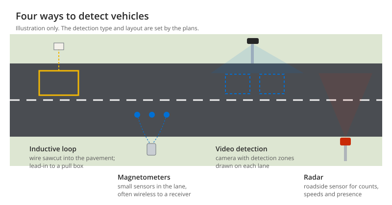

Vehicle detection
In one sentence: detection tells signals, ramp meters and the TMC where vehicles are and how traffic is moving.

Types
| Type | How it works | Notes |
|---|---|---|
| Inductive loops | Wire loops cut into the pavement; a vehicle changes their inductance | Saw cutting and sealant; sensitive to pavement work |
| Magnetometers | Small in-pavement sensors that sense the vehicle's magnetic field | Often wireless to a nearby receiver |
| Video detection | Cameras with software that detects vehicles in zones | Aiming and zone setup matter |
| Radar | Pole-mounted sensors that measure presence or speed | Used for counts and speeds on freeways |
The contract names the type and the layout on the plans.
What the contractor installs
Loops or sensors, lead-in cable to the cabinet, detector cards or processors in the cabinet, and the setup (sensitivity, zones). See Conductors and cables.
Testing
Loops are tested for inductance and insulation; every detector must report correctly to the controller or the TMC. See Phase 9: System testing.
PM notes
Coordinate loops with paving: cut loops in new pavement only when the schedule allows, and protect existing loops during other work.
Common mistakes / what Caltrans actually checks
- Loops cut before final paving and then paved over.
- Lead-in cables not labeled by lane.
- Video zones set but never verified in real traffic.